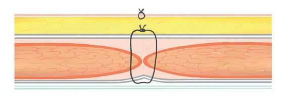
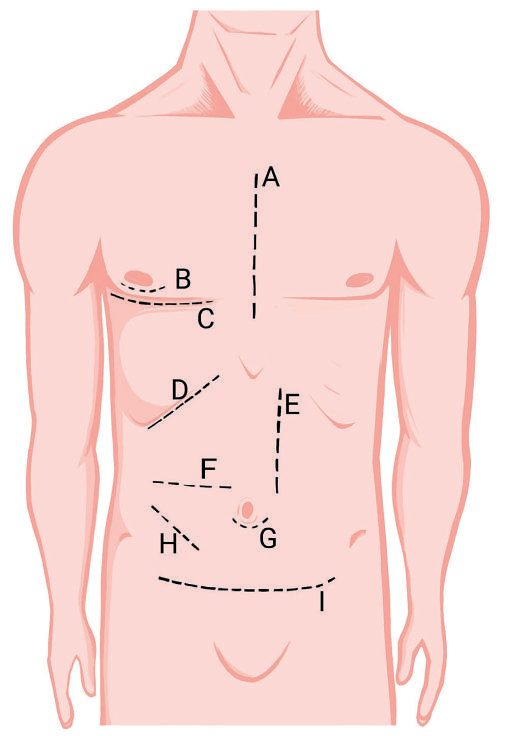

Wound Closure and Suturing Principles
Summary
Wound healing is a complex, dynamic biological process that in adult human tissue normally results in fibrosis and scar formation, classically described in three overlapping stages (inflammation, proliferation and remodelling) preceded by an immediate haemostasis phase [1]. Wound closure technique (primary, secondary or tertiary/delayed primary intention) and suture/needle selection are chosen according to wound contamination, tissue type and tension, guided by core principles of preparation, debridement, tension-free closure and follow-up [1][2].
Definition
- Wound healing has classically been described in three overlapping but distinct stages (inflammation, proliferation and remodelling) with an additional immediate haemostasis phase often described before inflammation [1].
- Primary healing (healing by first intention) occurs with direct approximation of wound edges and yields the best scar; secondary healing (healing by secondary intention) occurs when a wound is left open to heal by granulation, contraction and re-epithelialisation; tertiary healing (delayed primary healing) occurs when wound edges are deliberately left unopposed initially (e.g. in contaminated wounds) and surgically approximated later once the wound is clean [1].
- Sutures are classified along two lines: non-absorbable versus absorbable, and braided versus monofilament [2].
Pathophysiology
- Haemostasis: vascular disruption causes vasoconstriction and exposure of subendothelial extracellular matrix, promoting platelet adhesion, activation and aggregation into a platelet plug; activated platelets release alpha-granule contents (TGF-beta, PDGF, fibroblast growth factor, epidermal growth factor, VEGF) that drive matrix deposition, chemotaxis, epithelialisation and angiogenesis, while tissue factor triggers the coagulation cascade to generate thrombin, which forms fibrin to stabilise the platelet plug and scaffold infiltrating cells [1].
- Inflammation: early phase (days 1–2, or days 0–2 per ABSITE Review) is dominated by neutrophils (polymorphonuclear leukocytes), which limit bacterial contamination and are the first cells to infiltrate the wound, peaking at 24–48 hours; late phase (days 2–3, or days 3–4) sees monocyte-derived macrophages, which phagocytose debris, release proteolytic enzymes for debridement, and are the primary source of cytokines/growth factors driving fibroblast proliferation and angiogenesis [1][3][4].
- The overall order of cell arrival in the wound is platelets, neutrophils (PMNs), macrophages, lymphocytes, then fibroblasts, with fibroblasts and endothelial cells the last populations to infiltrate [3][4].
- Proliferation: starts around day 3–5 (spanning roughly days 4–12 per Schwartz's ABSITE) and lasts 2–4 weeks; fibroblasts (whose strongest chemotactic signal is PDGF) deposit ground substance, collagen (predominantly type III initially) and drive angiogenesis and re-epithelialisation, forming pink granular granulation tissue; some fibroblasts differentiate into contractile myofibroblasts that draw wound edges together, particularly important in secondary-intention healing (the perineum contracts better than the leg) [1][3].
- Remodelling: begins 2–3 weeks after injury and lasts a year or more; type III collagen is progressively replaced by stronger type I collagen (complete by about 3 weeks) until the normal skin ratio of 4:1 type I to type III collagen is restored, with increasing collagen cross-linking and alignment increasing tensile strength, which is maximal (about 80% of uninjured skin strength) at around 12 weeks (8 weeks per ABSITE Review) postinjury, never fully equal to unwounded tissue [1][3].
- Net collagen content plateaus after several weeks (maximum accumulation around 3 weeks) even though ongoing collagenolysis (via matrix metalloproteinases) and synthesis continue, with subsequent tensile strength gains from fibril formation and cross-linking rather than additional collagen quantity [3][4].
- Collagen synthesis requires alpha-ketoglutarate, vitamin C, oxygen and iron for hydroxylation (via prolyl hydroxylase) and cross-linking of proline residues [3].
- Epithelial integrity is the most important factor in healing of open wounds by secondary intention (epithelial migration occurs primarily from hair follicles, then wound edges and sweat glands), whereas tensile strength (dependent on collagen deposition/cross-linking) is the most important factor in healing of closed incisions by primary intention [3].
- Bone heals by similar phases to skin: a fracture haematoma and inflammatory response is followed by soft (fibrocartilage) callus, then hard (woven bone) callus via endochondral and intramembranous ossification (indirect/secondary healing, typical of non-operative fracture management), with subsequent remodelling to lamellar bone; primary bone healing (direct intramembranous ossification without callus) requires rigid fixation with absolute stability, as achieved by open reduction and internal fixation [1].
- Peripheral nerve injury causes distal Wallerian degeneration and proximal degeneration to the nearest node of Ranvier, with regenerating fibres guided by neurotropism; peripheral nerves regenerate at approximately 1 mm/day [1][3].
- Tendon repair relies on intrinsic healing (vincular blood flow, synovial diffusion) and extrinsic healing (fibrous adhesions to the tendon sheath); early active mobilisation favours intrinsic healing and reduces adhesion-related motion limitation, but repairs must be splinted to prevent rupture [1].
Clinical features
- Abnormal scarring: hypertrophic scars remain within the boundary of the original wound, contain excess collagen arranged in a parallel pattern, and eventually regress; they are more common in areas of increased tension, wounds crossing tension lines, deep dermal burns, and wounds healing by secondary intention over more than 3 weeks [1].
- Keloid scars extend beyond the original wound boundary, contain disorganised excess collagen, do not spontaneously regress, are difficult to treat, occur more often after minor trauma in darker-skinned individuals, and have an implicated genetic (autosomal dominant) predisposition, arising from failure of collagen breakdown rather than excess synthesis alone [1][3].
- Wound dehiscence presents as leakage of large amounts of pink ("salmon-coloured") fluid from the wound and, if untreated, can progress to evisceration; the leading risk factor is deep wound infection, with poor nutrition, COPD, diabetes mellitus and chronic coughing also contributing [3].
- Diabetic foot ulcers typically occur at the Charcot joint (classically the second metatarsophalangeal joint) or heel, secondary to neuropathic loss of protective sensation and pressure-related ischaemia; venous insufficiency accounts for about 90% of leg ulcers [3].

Etiology
- Local factors adversely affecting wound healing: skin tension, hypoxia and ischaemia, vascular insufficiency, lymphoedema, contamination, infection, presence of foreign bodies, and radiotherapy.
- Systemic factors: advancing age, obesity, malnutrition, smoking, disease (diabetes mellitus, connective tissue disease), immunocompromise (e.g.
- AIDS), and medications (steroids, immunosuppressants, chemotherapy) [1].
- Additional impediments identified include bacterial load >10^5/cm² (reduces oxygen content, causes collagen lysis and prolonged inflammation), devitalised tissue and foreign bodies (retard granulation), cytotoxic drugs (5-FU, methotrexate, cyclosporine, tacrolimus, impair healing mainly in the first 14 days), diabetes (impairs early inflammatory response/leukocyte chemotaxis via hyperglycaemia), albumin <3.0 g/dL, steroids (inhibit macrophages, PMNs and fibroblast collagen synthesis, reduce tensile strength, counteracted by vitamin A 25,000 IU/day), and wound ischaemia/hypoxia (from fibrosis, pressure, arterial or venous insufficiency, smoking, radiation, oedema, vasculitis) [3].
- Genetic collagen disorders causing abnormal wound healing include osteogenesis imperfecta (type I collagen defect), Ehlers-Danlos syndrome (a group of about 10 disorders, over half involving genetic defects in the alpha-chains of type V collagen), Marfan syndrome (FBN-1 fibrillin gene mutation, though skin itself shows no delay in healing), epidermolysis bullosa (excessive fibroblasts), scurvy (vitamin C deficiency), and pyoderma gangrenosum [3][4].
- Interestingly, chemotherapy and denervation have no effect on wound healing after the first 14 days, and infants heal with little or no scarring [3].
Diagnosis
- Wounds are classified along multiple, complementary axes since no single system captures every clinical dimension: by aetiology (clean surgical, shearing/degloving, crush, blast, burn, cold injury, avulsion/traction, bite), by depth (epidermal, dermal superficial/deep, full thickness), by contamination (clean, clean-contaminated, contaminated, dirty, with or without implant), by complexity (simple, complex with soft-tissue loss/open fracture/visceral involvement), by complication (infected, necrotic, haematoma, gas gangrene, compartment syndrome), or as chronic wounds (vascular, pressure, diabetic ulcers) [1].
- The widely used bacterial-contamination classification (introduced 1964 by the US National Research Council, adapted by the CDC) defines: Class I (clean), uninfected, no inflammation, respiratory/alimentary/genital/urinary tract not entered, primarily closed; Class II (clean-contaminated), respiratory/alimentary/genital/urinary tract entered under controlled conditions without unusual contamination; Class III (contaminated), open fresh accidental wounds, major breaks in sterile technique (e.g. open cardiac massage), gross GI spillage, or incisions with acute non-purulent inflammation; Class IV (dirty), old traumatic wounds with retained devitalised tissue, or wounds involving existing infection or perforated viscera [1].
- This classification has low inter-observer reliability despite widespread use [1].
- The National Nosocomial Infections Surveillance (NNIS) score predicts surgical site infection risk from 0 (lowest) to 3 (highest), with one point each for a contaminated/dirty wound, ASA score ≥3, and operative time exceeding the 75th percentile for that procedure type [1].
- Tetanus-prone wounds include puncture injuries in a contaminated environment, bites, compound fractures, wounds with retained foreign bodies, and wounds/burns with systemic sepsis; high-risk tetanus-prone wounds add heavy contamination (soil/manure), surgical delay >6 hours, or extensive devitalised tissue, and prophylaxis is guided by wound category and immunisation history [1].
Scoring and Severity
Not covered in source textbooks as a dedicated wound-healing severity score beyond the CDC wound-contamination classification (Classes I–IV) and the NNIS SSI-risk score detailed under Diagnosis above, which function as the closest equivalents to a severity/risk grading system for wounds and their closure [1].
Treatment and Management
- General principles of wound management: preparation (antibiotic prophylaxis for clean-contaminated/contaminated/dirty wounds or high-infection-risk clean wounds; tetanus prophylaxis per wound category and immunisation status; adequate analgesia/anaesthesia; wound irrigation), wound care (early debridement and irrigation, exploration, repair of structures, haemostasis), closure (tension-free skin closure, consideration of reconstruction options, suture choice, drains where indicated, optimal dressings), and follow-up (suture/splint removal, physiotherapy, monitoring for complications, scar management) [1].
- Debridement must excise non-viable tissue until healthy bleeding occurs at the wound edges (healthy subcutaneous fat is yellow and soft; muscle viability is judged by colour, bleeding capacity and contractility); contaminated, complex or complicated wounds (e.g. blast injuries, necrotising fasciitis) often require more than one debridement before definitive closure [1].
- All wounds should be irrigated at the first opportunity with warm normal saline to reduce bacterial contamination and improve visualisation [1].
- Suture selection: non-absorbable sutures (e.g. polypropylene/nylon monofilament, silk/braided polyfilament) are used where prolonged tensile integrity is required, such as vascular anastomoses, hernia mesh fixation, tendon repair and sternal wiring; absorbable sutures (e.g.
- Monocryl/PDS monofilament, Vicryl/Dexon braided) are used where persistent foreign material would provoke unnecessary tissue reaction or infection risk, such as bowel anastomoses and skin/subcutaneous closure [5].
- Monofilament sutures pass smoothly through tissue with minimal reaction but have more "memory," making knots less secure and increasing fracture risk; braided polyfilament sutures cause more tissue friction but are more flexible and knot more securely [2].
- Suture sizing runs from 10/0 (smallest, invisible to the naked eye) through 7/0–5/0 (small-to-medium vascular anastomoses), 3/0–2/0 (bowel anastomoses, subcutaneous fascial closure, vascular pedicle ligation), 1 (abdominal wall closure), up to 4 (largest, e.g. sternal wires) [2].
- Needle types include curved or straight shafts, and round-bodied (blunt (low tissue penetrance, used for major incision closure; or sharp) round cross-section, "pushes" tissue apart, used for delicate tissue such as bowel/vessels) versus cutting/reverse-cutting points (triangular cross-section with a cutting edge, used for dense tissue such as fascia and tendon) [2].
- Fascial layers bear most of the strength of abdominal wound apposition and are typically closed with heavy, non-permanent (absorbable) sutures; bony defects should be apposed to minimise movement; large potential spaces between tissue layers should be avoided to reduce fluid collection and infection risk [6].
- Suture removal timing: 1 week for facial wounds, 2 weeks for other areas under normal circumstances [3]; in Ehlers-Danlos syndrome, dermal wounds should be closed in two layers with sutures left in place for twice the usual duration, reinforced with adhesive tape, given the risk of poor tissue-holding [4].
- Delayed primary closure is used to reduce infection risk in contaminated wounds but carries some risk of abscess formation after closure [3].
- Optimising the wound environment for healing includes maintaining a moist environment (avoiding desiccation), optimising oxygen delivery (adequate fluids, smoking cessation, pain control, arterial revascularisation, supplemental oxygen, targeting transcutaneous oxygen >25 mmHg), avoiding oedema (leg elevation), and removing necrotic tissue [3].
- Treatment of established keloid and hypertrophic scars includes intralesional steroid injection, silicone sheeting, pressure garments, and radiotherapy for keloids specifically; scar revision surgery should wait at least 1 year to allow scar maturation [3].
- Leg ulcers from venous insufficiency are treated with compression (Unna boot), pentoxifylline and aspirin [3].
- Pyoderma gangrenosum is treated with steroids; epidermolysis bullosa with phenytoin [3].
- Wound dehiscence is managed with retention sutures [3].

Surgeries
- Split-thickness skin grafts may be meshed to expand coverage area and allow drainage of underlying fluid [1].
- Defects in fascial or bony tissue are reconstructed either with transposed tissue (skin, fascial or muscle flaps) or inserted synthetic material (e.g. polypropylene mesh) [6].
- Open reduction and internal fixation aims to achieve primary bone healing by direct apposition and rigid fixation of fracture ends with absolute stability, avoiding callus formation [1].
- Common laparotomy incisions include midline, paramedian, Kocher, Pfannenstiel, McBurney/Lanz (appendicectomy), muscle-cutting transverse, roof-top, McEvedy (femoral hernia), and inguinal hernia incisions, each chosen for the target organ/procedure [8].
- Complex or contaminated wounds (blast injuries, necrotising fasciitis, high-pressure injection injuries of the hand) require urgent surgical exploration and often repeated debridement before definitive repair and closure [1].


Complications
- Untreated wound infection and dehiscence can progress to evisceration in abdominal wounds [1][3].
- Chronic non-healing wounds cause significant morbidity and poor cosmesis [1].
- Excessive/prolonged inflammation produces hypertrophic or keloid scarring, as described under Clinical features [1].
- Neuroma formation can follow perineurial injury and inflammation during nerve regeneration, producing a painful disorganised lump [1].
- Tendon repairs risk adhesion formation (limiting range of motion) if not actively mobilised early, or rupture if mobilised without adequate splint protection [1].
- The weakest time point for a small bowel anastomosis is 3–5 days postoperatively, coinciding with the collagenolysis phase before adequate new collagen cross-linking, which is relevant to overall wound/anastomotic healing risk [3].
Prognosis
- Primary healing (well-apposed wounds without adverse influences) heals well and leaves the best (minimal) scar; secondary healing produces a poorer scar due to increased inflammation and proliferation [1].
- Wound tensile strength is maximal at approximately 12 weeks (8 weeks per ABSITE Review) postinjury, reaching only about 80% of uninjured skin strength, never fully equalling pre-wound strength [1][3].
- Reopening a previously healed wound heals faster the second time, since reparative cells are already present locally [3].
- Scar maturation and remodelling continue for 6–12 months or longer postinjury, gradually producing a mature, avascular, acellular scar; infants heal with little or no visible scarring [3][4].
References
- Bailey & Love's Short Practice of Surgery, 28th ed., Ch. 3 Wound healing and tissue repair
- Oxford Handbook of Clinical Surgery, 5th ed., Knots and sutures
- The ABSITE Review, 2022, Ch. 14 Wound Healing
- Schwartz's Principles of Surgery: ABSITE and Board Review, Ch. 9 Wound Healing
- Oxford Handbook of Clinical Surgery, 5th ed., Knots and sutures, Table 2.2
- Oxford Handbook of Clinical Surgery, 5th ed., Incisions and closures
- Bailey & Love's Short Practice of Surgery, 28th ed., Ch. 7
- Oxford Handbook of Clinical Surgery, 5th ed., Incisions and closures, Fig. 2.5